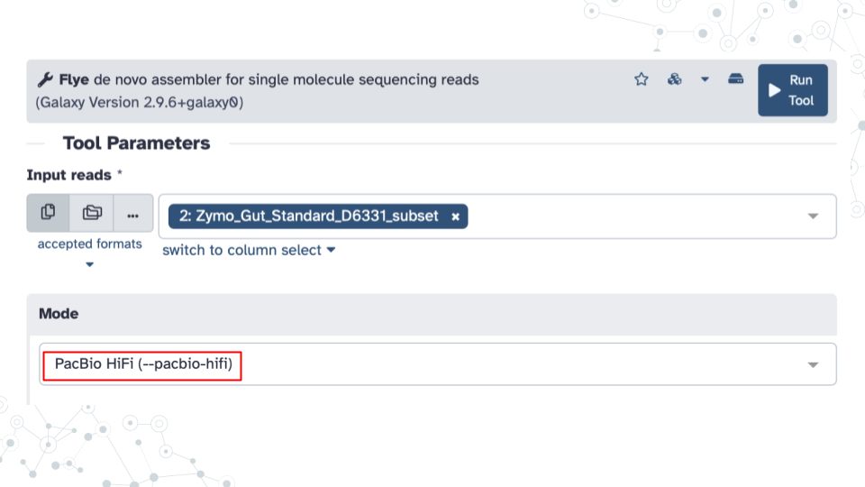
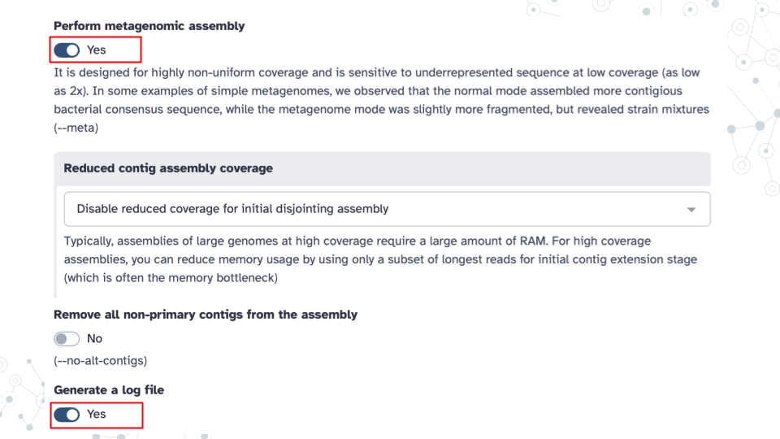
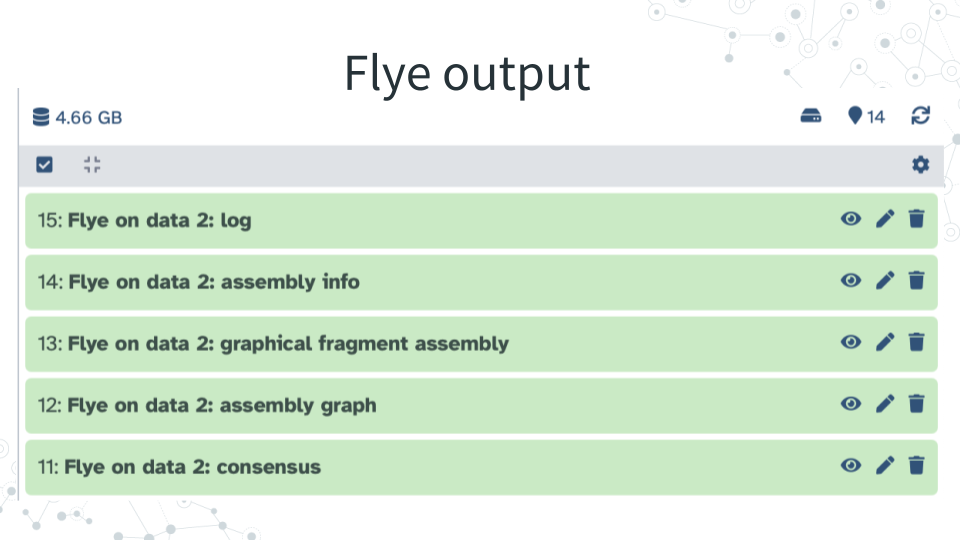

5.2 Homework: Finding AMRs Prelab
5.2.1 Purpose
To use a Galaxy tools to perform de novo genome assembly of sequencing reads into contigs, visualize the contigs and find antimicrobial resistance (AMR) genes.
5.2.2 Learning Objectives
Use Galaxy tools to:
- Use Flye tool to perform de novo genome assembly of long reads into ‘contigs’
- Visualize contigs with Bandage Image tool
- Use ABRicate tool to find AMRs in contig assemblies
5.2.3 Introduction
Genome assembly is the process of reconstructing genomes from DNA sequence reads. Accurate and continuous genome assembly from sequenced fragments, even very long fragments, is challenging. Flye, is a long-read assembly algorithm that aims to produce highly contiguous genome assemblies and overcome some of the assembly challenges, like repetitive DNA sequences. Using Flye we will hope to be able to reconstruct bacterial genomes and plasmids and enable detection of important genes like AMRs. Ideally, after assembly we want to get back circular contigs as that would typically indicate an entire microbial genome(s) or plasmid(s).
Antimicrobial resistance is the ability of microbes to evade one or more antibiotics, leading to multidrug resistance and ability to survive and even thrive in the presence of antibiotics. Detecting and studying antibiotic-resistant pathogens is therefore extremely important to human health. However, the environmental reservoirs of resistance determinants are poorly understood. Certainly the indiscriminate and sometimes inappropriate use of antibiotics by humans (e.g. in the hospitals, in food production) has contributed to the emergence of resistant bacterial strains, but there are many other ways microbes can acquire AMR. For example, the environment like soil is emerging as a key reservoir of these antibiotic resistance genes. For more information on AMRs see the following review articles: 10.1038/nrmicro2312 and 10.3390/antibiotics13121112.
Table of approximate minimum times for a job to be completed on Galaxy using specified tools.
- Note, these times apply only to the specific input file we will be using in this activity, the Zymo_Gut_Standard_D6331_subset that is ~340MB, and will take longer (or much longer) for larger (or much larger) input files.
| Flye | Bandage Image | ABRicate |
|---|---|---|
| 5 min | < 5 min | < 5 min |
5.2.4 Activity 1 – Flye assembly
Estimated time: 45 min
5.2.4.1 Instructions
1. Run Flye in Galaxy - using Zymo Gut Standard D6331 subset to assemble gut microbial genomes.
Obtain .fastq file from
Zymo_Gut_Standard_D6331_subset: https://usegalaxy.org/u/valerie-g/h/zymo-gut-standard-d6331-subset-1Name your new history “Finding gut AMRs”.
Run Flye tool to assess sequence quality using the following Tool Parameters:
- Under Input Reads: select your
Zymo_Gut_Standard_D6331.fastq dataset. - Under Mode: select
PacBio HiFi (--pacbio-hifi)option, since the sequences were obtained using PacBio HiFi sequencing technology. - Under Perform metagenomic assembly: select
Yes - Under Generate a log file: select
Yes


2. View Flye results - Explore Flye output files and answer questions below.

5.2.4.2 Questions
1. Explore Flye tool purpose and output.
A. In your own words describe the purpose of Flye based on the Introduction section, and from the Purpose section of Flye tool description. |
|---|
| B. How many Flye output files did you get back, and what are they? |
|---|
| C. What are the file extensions (formats) for the following Flye output files? |
|---|
| consensus |
| graphical fragment assembly |
2. Explore Flye log report file.
A. Based on your Flye output log report file: At the very bottom of the very long file find how many bases were assembled. What is the Total length? |
|---|
B. Based on your Flye output log report file: At the very bottom of the file find the length of the longest assembled fragment? Look for Largest frg? |
|---|
| C. What proportion of input was assembled into contigs? |
|---|
At the very top of the log file you will find that the input number of bases was 177,760,975 (Look for Total read length). Compare to the total length after assembly from your answer to question 2A above |
3. Explore Flye assembly info file.
A. Based on your Flye output assembly info file sorted by contig length (high to low, in base pairs, bp) - What is the longest `contig size? |
|---|
B. Based on your Flye output assembly info file sorted by contig length (high to low, in base pairs, bp) - What is the shortest contig size? |
|---|
4. Explore Flye output consensus file (in FASTA format).
| A. What is the beginning line of the FASTA format? |
|---|
| B. How does FASTA sequence format differ from FASTQ sequence format? |
|---|
See this link for a quick summary comparison of the 2 formats [https://compgenomr.github.io/book/fasta-and-fastq-formats.html](https://compgenomr.github.io/book/fasta-and-fastq-formats.html) |
5. Test your general understanding of genome assembly.
| A. Summarize your experience with assembling a genome with Flye. |
|---|
E.g., were you surprised at the percentage of assembled input, at the length of the largest contig, at the abundance of linear contigs, or anything else? |
| B. What would you want the ideal genome assembly tool to do? |
|---|
5.2.5 Activity 2 – Visualizing contigs
Estimated time: 15 min
5.2.6 Activity 3 – Finding AMRs
Estimated time: 30 min
5.2.6.1 Instructions
- Run ABRicate tool in Galaxy using Flye consensus as input using the following
Tool Parameters:
- Under Input Reads: select your Flye: consensus output in FASTA format
- IMPORTANT: Under Advanced Options: select
NCBI Bacterial Antimicrobial Resistance Reference Gene Databaseas your database option; the default‘resfinder’ may not work well.
- Explore ABRicate report file.
Abricate output report has the following information:
| Column | Description |
|---|---|
| FILE | The filename this hit came from |
| SEQUENCE | The sequence in the filename |
| START | Start coordinate in the sequence |
| END | End coordinate in the sequence |
| GENE | ABR gene name |
| COVERAGE | What proportion of the gene is in our sequence |
| COVERAGE_MAP | A visual represenation of coverage map (gaps or no gaps) |
| GAPS | Was there any gaps in the alignment - possible pseudogene? |
| %COVERAGE | Proportion of gene covered |
| %IDENTITY | Proportion of exact nucleotide matches |
| DATABASE | The database this sequence comes from |
| ACCESSION | The genomic source of the sequence |
- Answer questions below.
5.2.6.2 Questions
1. Explore Abricate output report.
| A. How many AMR genes were detected? This is the number of rows in your file |
|---|
| B. How many DIFFERENT AMR genes were detected and what are their GENE names? |
|---|
| C. What are the different AMR genes resistant to? What is their RESISTANCE? |
|---|
| D. How many DIFFERENT contigs had AMRs? |
|---|
2. Research an AMR gene.
| A. Research and write a small paragraph report on one of the AMR genes. |
|---|
Use any search tools for your research, but we encourage you to use PubMed [https://pubmed.ncbi.nlm.nih.gov/](https://pubmed.ncbi.nlm.nih.gov/) where you can find many scientific articles on the topic if you search for e.g. your AMR gene name, or resistance name or using a sentence as input. Talk about anything of interest, e.g., which microbes have the AMR of interest, what is the substance to which the gene shows resistance to, where could the resistance to this substance come from, what are possible health implications, etc. |
| B. Ask one question you want to know about AMRs? |
|---|